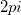

The angle(x, y) function returns the angle in radians measured between the positive X axis and the line joining the origin (0,0) with the point given by (x, y). The returned values range from 0 to . Note that angle(0, 0) returns a missing value because the result is undefined.
double angle(double x, double y)
x
y
Returns the angle in radians measured between the positive X axis and the line joining the origin (0,0) with the point given by (x, y).
angle(1,1)=; //angle(1,1)=0.78539816339745